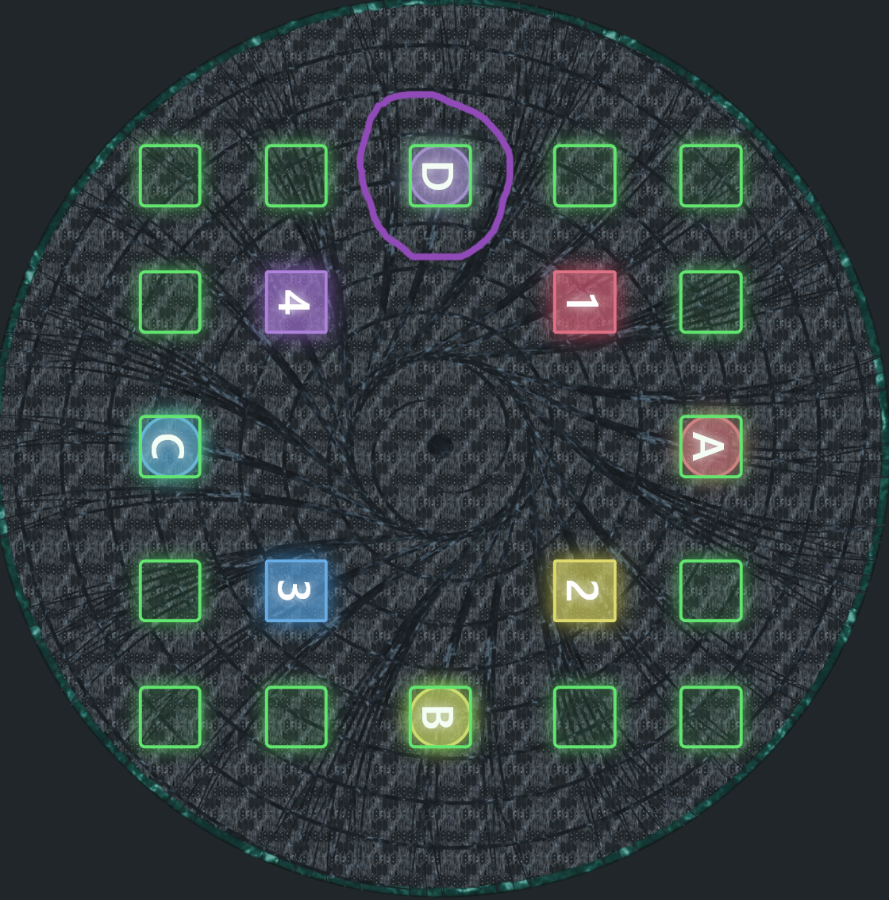
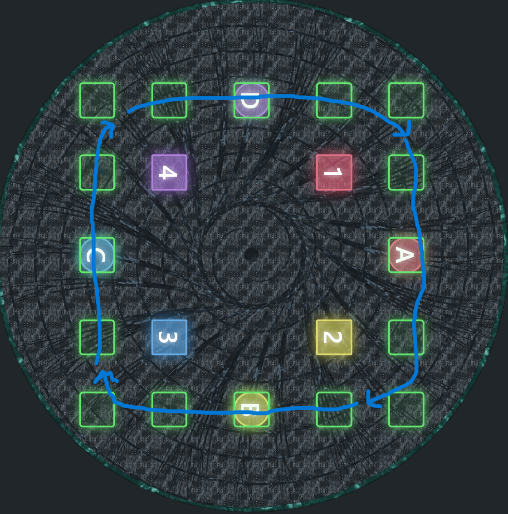
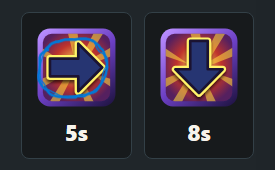
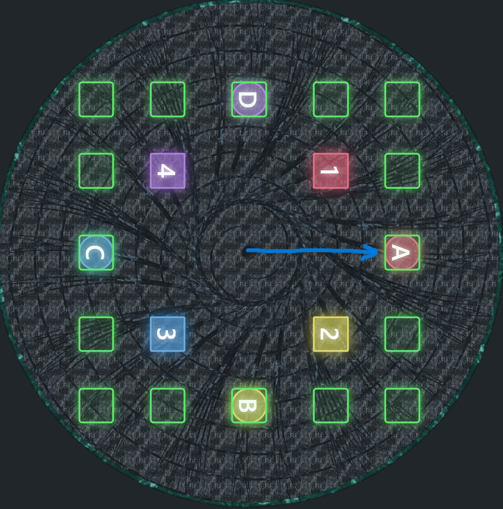
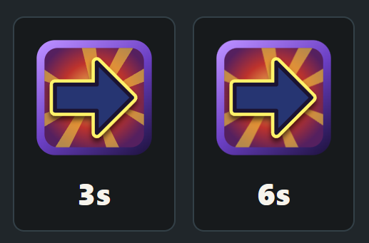
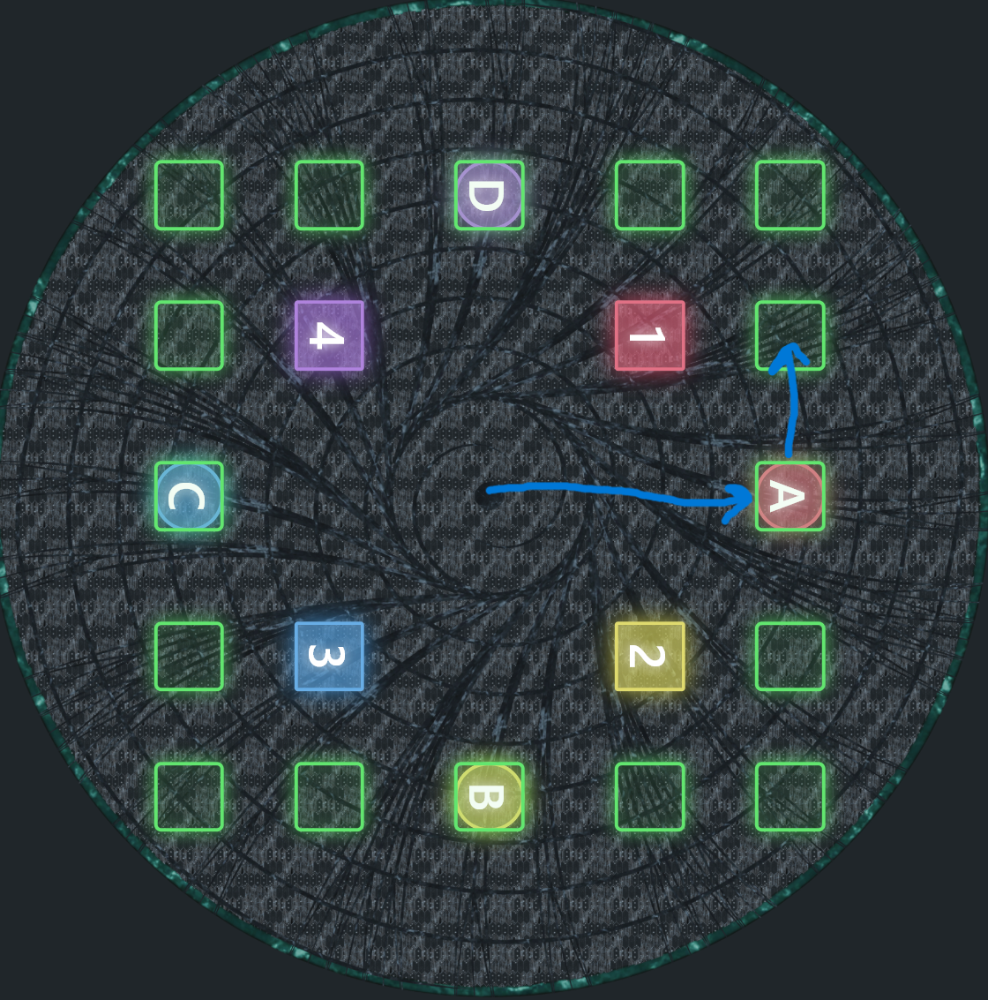
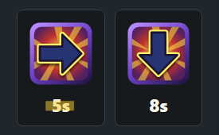
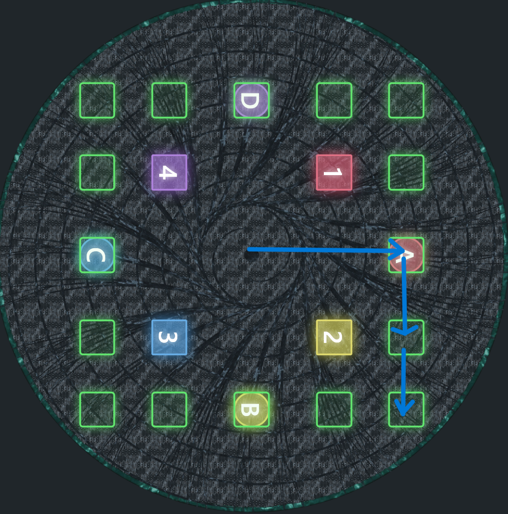
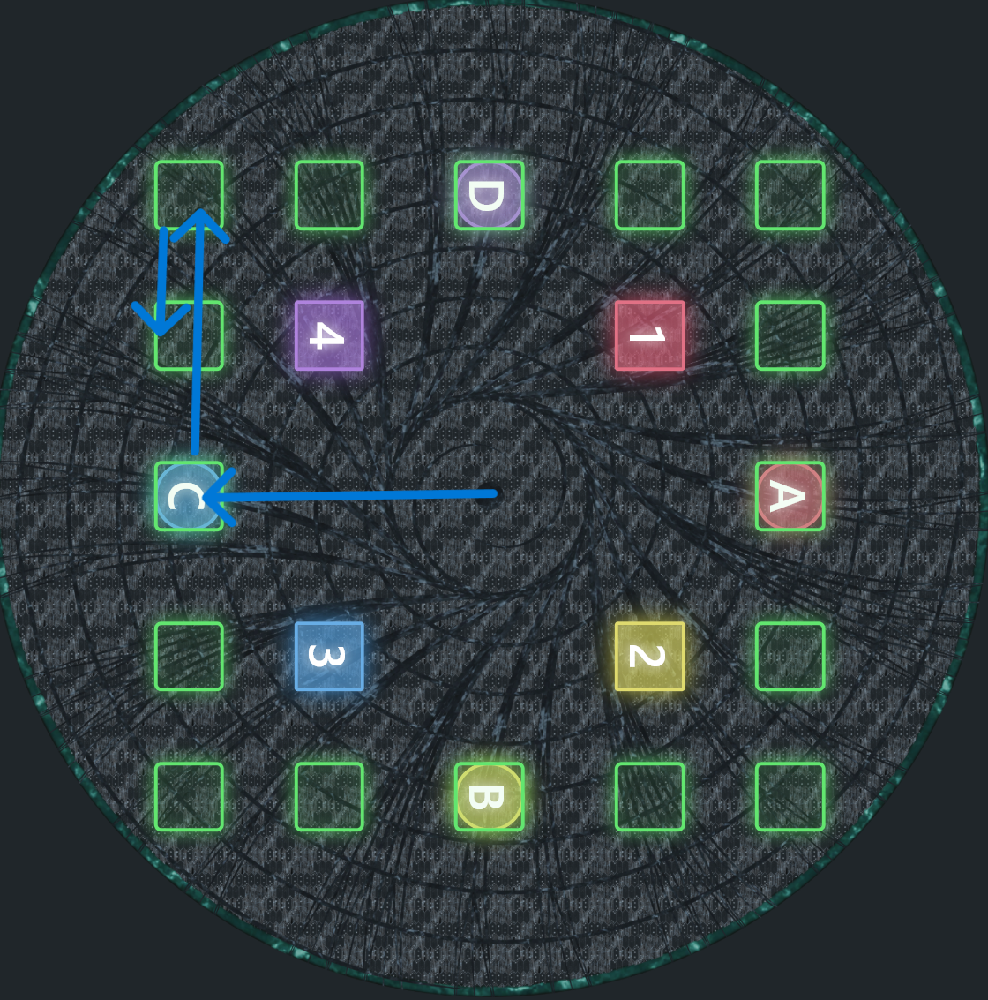

DMU Phase 1
Big Box Arrows Guide
Step through the priority check for placing Big Box Arrows portals.
-

Face camera at D.
-

Picture a clockwise loop around the arena.
-


Look at the first arrow, then go to that cardinal. Important: Figure out if your debuffs are left or right justified. The rest of this guide will assume debuffs are left justified meaning the "first arrow" is on the left.
-

Look to see if you have the same arrows or different arrows.
-


If your arrows are the same, stay at the cardinal to drop the first arrow. Then move counter clockwise to drop the second arrow.
-

If the arrows are different, check the timer on the first arrow. (Diagram assumes left-justified debuffs.)
-


If the first arrow has the short timer, move clockwise to drop arrow one spot away from the cardinal. Then drop the arrow in the corner.
-


If the first arrow has the long timer, move clockwise to the corner of the big box to drop the first arrow and then go back towards the cardinal to drop the second arrow.